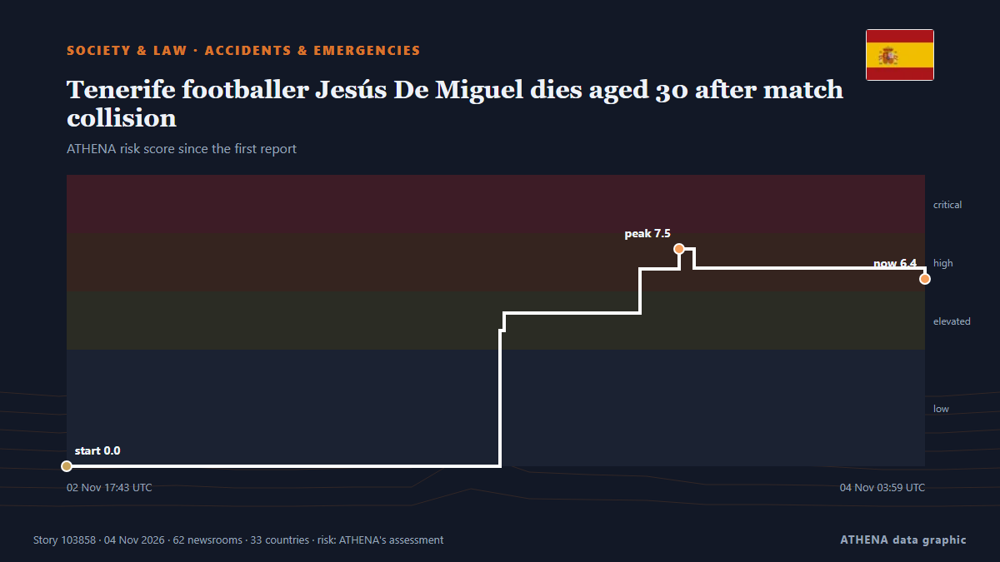

Society, Law & Public Policy

Accidents & emergenciesTenerife footballer Jesús De Miguel dies aged 30 after match collision
Jesus de Miguel was fouled in the middle of the pitch by Andorra's goalkeeper, who rushed out of his goal and received a red card. from Free Malaysia Today
| 22 Oct | 222 |
|---|---|
| 23 Oct | 188 |
| 24 Oct | 120 |
| 25 Oct | 131 |
| 26 Oct | 319 |
| 27 Oct | 310 |
| 28 Oct | 291 |
| 29 Oct | 261 |
| 30 Oct | 300 |
| 31 Oct | 153 |
| 1 Nov | 192 |
| 2 Nov | 288 |
| 3 Nov | 198 |
| 4 Nov | 8 |
1 Dead, 2 Injured After 2 Helicopters Collide On Mount Everest
Two helicopters collided near Mount Everest during Nepal's peak trekking season, killing an Indian tourist and injuring passengers and pilots. from Simple Flying
Goalkeeper Owono breaks down after collision that led to footballer’s death
FC Andorra goalkeeper Jesús Owono was reportedly left distraught and broke down in tears in the dressing room after the accidental collision that preceded the death of CD Tenerife forward Jesús de… from Vanguard
Learjet Parts Found Miles from Florida Crash Site, NTSB Says
Family of four, two close friends and nanny also died in crash as pilot identified as 55-year-old Jeff Gregory Family members on Monday identified a young Florida pilot as one of nine victims of a… from The Guardian
US to deport 150 Afghan immigrants back to Afghanistan: US media
Trump administration plans to deport more than 150 Afghans via Pakistan, despite warnings from advocacy groups that they could face danger under Taliban rule. from The New Arab
Czech public media workers go on strike over a government plan to overhaul their funding
Czech public media workers went on a one-day strike on Tuesday to protest a government plan to overhaul how public broadcasters are funded, legislation that many say would threaten their independence. from The National Herald
Poland: Dispute Over Constitutional Court Escalates
Poland’s dispute over the constitutional court has escalated, with President Nawrocki blocking the swearing-in of five newly elected judges. from Kyiv Post
Mexican investigators raid storage unit rented by Meghan's father Thomas Markle
The Metropolitan Police acknowledged receiving a letter in 2019 regarding accusations about Meghan Markle’s father but did not share this information with other law agencies. from Arab News
Poland Deploys Counterterrorism Police Near Russia Border
Poland has deployed additional police, including counterterrorism units, in the Warmian-Masurian and Podlaskie regions after receiving warnings of possible sabotage near the Russian exclave of… from Kyiv Post
Lindsay Clancy Returns to Court in a Bid to Dismiss Charges She Killed Her Three Young Children
PLYMOUTH, Mass. (AP) — Lindsay Clancy returns to court Monday in a bid to dismiss the charges that she murdered her three young children. from The Canadian Press (via CityNews)
Jury retires to consider verdicts in Russell Brand trial
The 51-year-old denies three counts of rape, three counts of sexual assault, and one allegation of attempted indecent assault. from The Irish News (Belfast)
Thousands of volunteers build 108 stupas in a day in Bhutan's Gelephu Mindfulness City
Buddhist masters have gathered in Gelephu, Bhutan, to witness the construction of 108 stupas in a single day. from ABC News (International)
Poland’s PM vows support for tribunal amid court crisis
Riot police have been guarding the court since Friday afternoon, with several hundred protesters gathered to demand the reinstatement of the president of the country’s Constitutional Tribunal. from Sydney Morning Herald
Boy, 14, hands himself in to police after Bradley Lowery used in sickening taunt in Coventry vs Sunderland
Bradley Lowery died aged six from neuroblastoma. from Manchester Evening News
Famous man loses bid for injunction to stop reporting of allegations
The man brought legal action against Independent Television News (ITN) and Guardian News and Media, publisher of The Guardian. from Evening Standard (London)
Trump asks Supreme Court to sideline 20,000 California mail ballots
President Donald Trump's administration appealed to the Supreme Court on Monday in its push to sideline thousands of disputed California mail ballots the day before the pivotal midterm elections. from The Korea Times
Australia’s High Court hears bid to overturn under-16s social media ban
Online giant Reddit and advocacy group Digital Freedom Project argue ban is unconstitutional. from Al Jazeera English
French school blockades to restart from Monday: Student group
France's protest movement against soaring prices emerged from weeks of demonstrations by high school students protesting deteriorating learning conditions and inequality. from CNA (Channel NewsAsia)
At Least 31 Killed in Russian Bomb Attack in Zaporizhzhia
Ukrainian officials said Russia bombed a school being used as an aid distribution point in a village in the village of Komyshuvakha. from The Moscow Times
Gunmen kill 2 police officers guarding polio workers in Pakistan
Another officer was wounded when militants opened fire on their vehicle near the Afghan border in Khyber Pakhtunkhwa, while four officers were abducted in a separate incident. from Free Malaysia Today
British adventurer Karl Bushby ends epic 28-year trek across jungles, frozen sea
Bushby began his adventure when he was 29, after his marriage broke down. from The Straits Times
French school protests resume on smaller scale as students return from break
Police present, though not in full anti-riot gear as youth try to blockade high schools in Paris, Marseille, Rennes. from Express Tribune
Iran hangs two men over involvement in killing police officers
Iran executed two men for their involvement in killing four police officers during January protests in Isfahan. from Arab News
Taliban government voices ‘serious concern’ over US Afghan deportation plans
More than 150 Afghans in the US face deportation to Afghanistan via Pakistan, including relatives of those who assisted US forces before their withdrawal in 2021. from Free Malaysia Today
France launches 'attempted murder' probe after petrol bomb attacks on security forces
PARIS: France on Sunday launched an attempted murder probe after petrol bombs were thrown at security forces during Paris protests, as footage of an officer in flames sparked outrage. from New Straits Times
Martha Stewart says she ‘really screwed up’ with homeless Halloween costume
Stewart appeared dressed as a homeless person, holding a sign that read "I AM HUNGRY HELP ME!!" In the post's caption, she promoted her candle collection. from RNZ National
Judge Dismisses Trump's $10 Billion Lawuit Against Wall Street Journal Over Epstein Letter
Trump had sued for $10 billion after the newspaper's story was published in July 2025 detailing the president's alleged 2003 letter to Epstein, which apparently featured a drawing of a naked woman. from NDTV
US judge tosses case against ex-FBI officials accused of lying about Hunter Biden probes
US Magistrate Judge Zia Faruqui dismissed the case at a remarkably early stage, finding that prosecutors had not shown sufficient evidence that the two officials knowingly made false statements. from The Jerusalem Post
Bahamas-Bound Jet Crashes in Florida, 9 Dead
A USD$2 million business jet carrying nine people has crashed in Florida. from Sydney Morning Herald
Russia Officially Withdraws From Europe’s Anti-Torture Convention
Russia ratified the anti-torture treaty in 1998, two years after joining the Council of Europe. from The Moscow Times
German ministers vow tough response to Frankfurt riots and looting
FRANKFURT/PEISSENBERG, Germany, Nov 1 - German ministers threatened tough penalties for looters and rioters who damaged stores and injured more than 100 police officers in Frankfurt overnight, while… from The Straits Times
Brussels sides with Donald Tusk in Poland’s court crisis
The confrontation has attracted a response from France's Marine Le Pen and Slovenia's Janez Janša. from Euractiv
Third weekend of protests in France as youth-led rallies sweep Europe
The Interior Ministry told reporters that 70,000 people are estimated to have turned out for the main protest in Paris. from The Irish News (Belfast)
Rioters loot stores in Frankfurt as Gen Z-led protests in Germany turn violent
FRANKFURT/BERLIN: Hooded rioters looted stores in Frankfurt late on Saturday after tens of thousands of demonstrators took to the streets across Germany’s biggest cities to demand better education… from Arab News
New York City Mayor Mamdani secures Trump’s approval for visa for mother of slain Ghanaian teenager in Bronx
The mother of 15-year-old Ghanaian student Javits Frimpong, who was fatally shot while walking to school in New York, will be granted a visa to travel to the United States following an intervention… from MyJoyOnline